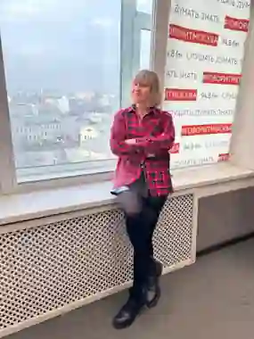
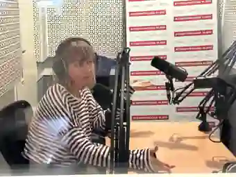

СОЦИАЛЬНАЯ ЖУРНАЛИСТИКА
«Лучший радиоведущий социальной программы»
Диплом Департамента труда и социальной защиты населения города Москвы. Подписан министром Правительства Москвы, руководителем Департамента Евгением Петровичем Стружаком.
Модерация форумов, интервью, подкасты, медицинские спецпроекты и подготовка врачей-спикеров. Более 20 лет в радио и медиа — с врачами, учёными и лидерами здравоохранения.

Работаю на стыке медицины, журналистики и публичной коммуникации. Помогаю экспертам говорить ясно, а аудитории — не теряться в профессиональном языке.

Веду медицинские программы на радиостанции «Говорит Москва» 94.8 FM, работаю с врачами разных специальностей, пациентскими историями, научными и общественными темами.
Моя сильная сторона — разговор: точный вопрос, спокойный темп и эксперт, который звучит убедительно без канцелярита и перегруза.
Награды за работу в социальной журналистике, заботу о детях и благотворительность.
Диплом Департамента труда и социальной защиты населения города Москвы. Подписан министром Правительства Москвы, руководителем Департамента Евгением Петровичем Стружаком.
Награда Уполномоченного при Президенте Российской Федерации по правам ребёнка. Удостоверение № 47 от 8 сентября 2016 года, подписано Павлом Алексеевичем Астаховым.
Почётная медаль Уполномоченного при Президенте Российской Федерации по правам ребёнка. Удостоверение № 41 от 8 сентября 2016 года, подписано Павлом Алексеевичем Астаховым.
Помогаю определить, чем вы интересны пациентам, коллегам, СМИ и партнёрам, и выбрать понятный маршрут продвижения. Вместе разберём ваши цели, опыт и публичные площадки — с опорой на вашу практику и ресурсы.
Я медицинский журналист и PR-консультант. Использую опыт работы с врачами, интервью и медицинскими проектами, чтобы помочь вам сформулировать свою экспертную позицию и понять, где и как о ней говорить.
25 000 ₽
90–120 минут · онлайн или очно по договорённости
от 40 000 ₽
Для врача, которому нужен подробный маршрут
от 60 000 ₽
Разбор клиники и стратегическая консультация
План строится индивидуально. Создание контента, ведение соцсетей, организация мероприятий и дальнейшее сопровождение обсуждаются как отдельные задачи. Публикации и приглашения зависят от решений редакций и организаторов.
Если для выбранного маршрута понадобится уверенно говорить перед камерой, отвечать на вопросы журналиста или выступать на конференции, можно отдельно провести практическую подготовку в рамках «Медиа-врача».
Формат собирается под задачу: медицинский форум, корпоративный проект, клиника, технологическая компания, бренд или экспертная команда.
Панельные дискуссии, круглые столы, медицинские конференции и специальные сессии.
Разговоры с врачами, учёными, руководителями и героями — от идеи до готового выпуска.
PR-разбор врача и клиники, позиционирование и персональная стратегия продвижения.
Подробнее о PR-разборе →Концепция, темы, спикеры, сценарий, редактура и запуск медицинского контента.
Интервью со спикерами, медиазона, короткие видео и материалы для PR и digital.
Медицинские, технологические и деловые события для русскоязычной аудитории по всему миру.
Мультимедийный проект о здоровье без рекламной интонации и сложных формулировок. Врач, герой и журналист говорят о диагнозе, выборе лечения, страхе, качестве жизни, новых технологиях и границах современной медицины.
Партнёр сезона, тематическая линия, спецпроект, брендированная студия, digital-серия или формат с мероприятия.

В студии важны не только факты. Важно слышать человека, вовремя задать следующий вопрос и перевести сложную медицинскую тему на язык слушателя.
Работаю и с опытными публичными врачами, и с теми, кто впервые оказывается перед микрофоном или камерой.

Я связываю позиции экспертов, задаю неудобные, но корректные вопросы и вовлекаю аудиторию.
Открыта к проектам в России и за рубежом: международным медицинским, технологическим и деловым мероприятиям с русскоязычной аудиторией.
Пригласить на мероприятиеОфициальные страницы программ и авторские площадки.
PR-разбор врачей и клиник, персональная PR-стратегия, модерация, интервью, подкасты и спецпроекты.